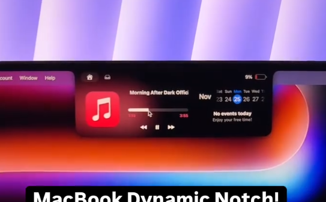
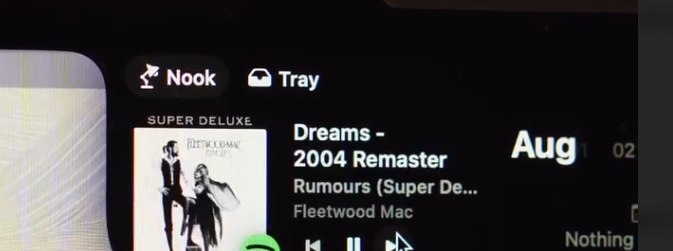
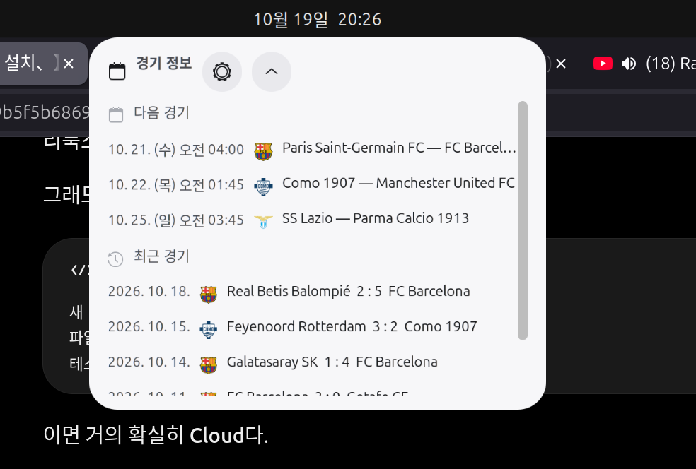
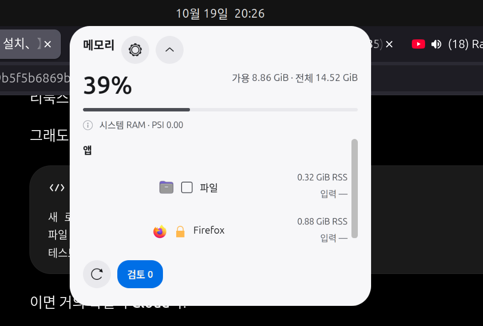

Notch reconstruction · visual prototype
2026-10-19 · 영상 레퍼런스는 형태와 밀도 참고용. 아래는 GNOME 시안이며 실제 GJS 렌더나 blur 지원 증거가 아닙니다.




경기 정보
다음 경기
BarcelonaParis Saint-Germain — Barcelona
ComoComo — Manchester United
LazioLazio — Parma
최근 결과
Betis 2 : 5 Barcelona
Feyenoord 3 : 2 Como
Archsport · idle
Memory
39%5.66 GiB used
8.86 GiB available
8.86 GiB available
◈Firefox0.88 GiB RSS
▣Files0.32 GiB RSS
matci · normal
⚽1 : 167′
Archsport · compact
67′ · 후반
 Barcelona1 : 1Inter◉
Barcelona1 : 1Inter◉67′ Barcelona 공격 · 최신 이벤트 1개
다른 경기·일정 보기 ⌄